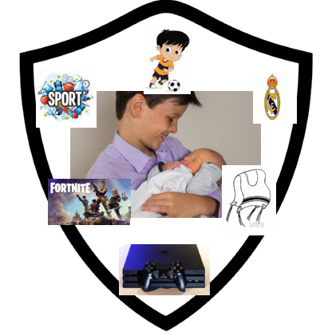

Arie fue el varón de la casa por casi diez años, sin tener competencia hasta que llegó Eli hace casi dos años. Por eso decidí representar a mi hermano con el fondo azul. Color que representa al sexo masculino. Como buen varoncito, le encantan los deporte, en especial el fútbol, disciplina que practica desde los 4 años. Es fan número uno del Real Madrid y en sus tiempos libres le encanta jugar en Play, el juego “fortnite”. Mi hermano es muy espiritual y con una identidad judía bien arraigada, por eso decidí colocar la imagen de los Tzitzit, prenda que siempre usa. En todo el centro del escudo se encuentra él cargando a su hermanito Eli David. Arie es un niño muy cariñoso y protector de su hermanito. Desde que éste nació, mi hermano se adjudicó la labor de cuidarlo . |